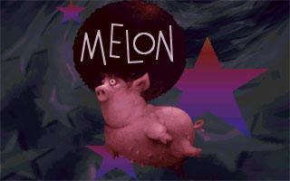

Remix Culture In The Demoscene
Filipe Cruz (ps / TPOLM)
WHOIS...
- MSc Informatics Engineer from Portugal
- demoscener since 1997
- assimilated inhabitant of TPOLM
- soundtrack for fr-055: 828 by farbrausch
(public's choice nominee scene.org award) - among other demos
- curator Enough Records netlabel
- former scene.org staff and pouet.net admin
- ...and don't forget to come to inérciaDemoparty2005
Focus...
- Demoscene Origins
- Copyright Concearns
- Remix Culture
- Remix Culture In The Demoscene
Demoscene Origins
Demoscene Origins
Crack intros - C64
Alleykat crack intro / Dynamic Duo
Demoscene Origins
Crack Intros - Atari
Football manager 2 intro / TGC + Blade Runners
Demoscene Origins
Crack Intros - Amiga
Creatures Cracktro / Melon + Crystal
Demoscene Origins
Ripped material
Samantha Fox Slideshow / An Cool
Demoscene Origins
Megademos (cool vs lame)
megademo / Red Sector Inc (Tristar Party 1989)
Demoscene Origins
Commercial soundtrack
State Of Mind / Bomb (2nd @ The Party 98)
Demoscene Origins
Commercial soundtrack
VIP 2 Invitation / Popsy Team (1st @ Takeover 2000)
Demoscene Origins
disqualified for copyright video usage
Saint / Halcyon + Da Jormas (disqualified @ Assembly 1997)
Demoscene Origins
disqualified for copyright sound usage
I Feel Like A Computer / Melon Dezign (disqualified @ Assembly 2003)
Demoscene Origins
couldn't get copyright permission
Barn / TDA (1st @ inérciaDemoparty2005)
Copyright Concearns
Copyright Concearns
Problems
- Parties Have Financial Legal Pressure
- Creators Have Difficulties To Get Permission
- Repositories Have To Deal With DMCA Takedown Requests
- Fair Use Gray Area
Copyright Concearns
Solutions (and downsides)
- 100% Original Material (who defines what is original?!?)
- Screw The System (won't get submitted to bigger parties)
- P2P and/or Temporary Download (culture gets lost through time)
- Creative Commons (still has plenty of limitations)
Copyright Concearns
Money
Content Creators (Free Culture - Lessig)
Content Creators (GPL - Stallman)
MAFIAA Lobbies
Consumers (Pirate Party)
Copyright Concearns
Other Creative Scenes Afflicted
- ROM Hacking
- Game Mod
- Machinima
- Console Hacking
Remix Culture
Remix Culture

Remix Culture

Paul's Boutique / Beastie Boys (1989)
Remix Culture
Remix Culture
Paul's Boutique / Beastie Boys (1989)
(would now take 20 million dollars losses for sample clearance)
Remix Culture
Grey Album / DJ Danger Mouse (2004)
(White Label Released Online)
Remix Culture
Mos Dub / Max Tannone (2010)
(White Label Released Online)
Remix Culture
What the MAFIAA doesnt know
- "Good Artists Borrow, Great Artists Steal"
-- Pablo Picasso - "Copy from one, it’s plagiarism; copy from two, it’s research."
-- William Mizner
Remix Culture
Links
Remix Culture In The Demoscene
Remix Culture In The Demoscene
remix != reappropriate
Timbalame / Chronic
Remix Culture In The Demoscene
remix can be tribute
Kind Of Bloop
Remix Culture In The Demoscene
hip hop influences
Inside / CNCD
Remix Culture In The Demoscene
remixing for kicks

Outside / Melon Dezign
Remix Culture In The Demoscene
remixing pop culture
Hyperventilation / Byterapers
Remix Culture In The Demoscene
remixing niche culture
fr-minus-06: ghettorocker / farbrausch
Remix Culture In The Demoscene
remixing for greater justice
vanilla rocker / mfx
Remix Culture In The Demoscene
about ripping
Riprap / Exceed
Remix Culture In The Demoscene
remixing WTF
Panjabmoore meets 007 again / Calodox
Remix Culture In The Demoscene
remixing as a joke remake
Second Reality / "Future Crew"
Remix Culture In The Demoscene
remixing for a musicdisk
Variform Remixed / Kewlers
Remix Culture In The Demoscene
remixing for pirated demo compo (tum)
Marijform / Nuance
Remix Culture In The Demoscene
remixing for pirate compos (inércia)
1337 / GlenZ
Remix Culture In The Demoscene
remixing to fill compo
Honda Gay / FXM ^ GlenZ ^ Jumalauta
Remix Culture In The Demoscene
remixing to experiment
A Deepness In The Sky - Dark & Long Remix / FXM
Remix Culture In The Demoscene
remixing to retork
A Deepness In The Sky - Knight Rider Edit / Pimp Ninja
Remix Culture In The Demoscene
remixing a remix icon
The Ultimate Funk Experience In The Sky / Nuance
Remix Culture In The Demoscene
first remix demo?
Deep - the Psilocybin Mix / CNCD & Parallax
Remix Culture In The Demoscene
first remix intro?
2nd hallucination / Stellar
Remix Culture In The Demoscene
haujobb vs mfx - proxy 2001
Kosmiset Avaruus Sienet / Haujobb
Remix Culture In The Demoscene
haujobb vs mfx - proxy 2001
oldskool trippin midskool nosejob -edit / mfx & Haujobb
Remix Culture In The Demoscene
Remix Culture In The Demoscene
Remix Culture In The Demoscene
Remix Culture In The Demoscene
most remixed demo
Elg / Odd
Remix Culture In The Demoscene
call for remixes
size antimatters (valmet children dark ambient mix) / valmet children
Remix Culture In The Demoscene
ASD goes commercial remix
Electric Bullet / ASD ^ Excess
Remix Culture In The Demoscene
ASD goes experimental remix
Anoxia Redux / ASD ^ minimalartifact